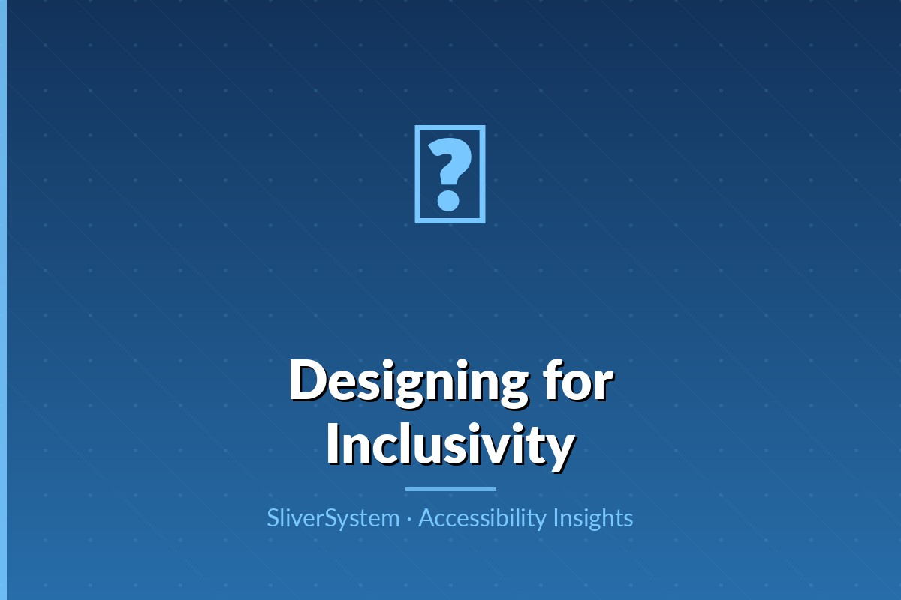

Design decisions that improve readability for low-vision, cognitive, and aging users.

WCAG contrast ratios provide essential baselines, but accessibility depends on real reading conditions. Users encounter glare, small screens, fatigue, and mixed lighting. Choose color pairs that exceed minimums whenever possible, especially for body text and controls. Contrast should also be validated for hover, focus, disabled, and error states—not just default static screens.
Readable typography combines sufficient size, line spacing, letter spacing, and predictable hierarchy. Avoid dense blocks of text and all-caps paragraphs. Users with dyslexia, ADHD, or low vision often benefit from generous spacing and clear heading structure. Font choices should prioritize character distinction so similar symbols are not easily confused.
Relying on color alone to indicate errors, status, or selection excludes users with color vision deficiencies. Pair color with labels, icons, patterns, or helper text. For charts and data visualizations, use distinct shapes and direct labels in addition to color palettes. This approach improves interpretation speed for all users, including those using grayscale displays.
Dark mode can reduce eye strain for some users, but it can decrease readability when contrast and spacing are poorly tuned. Validate both light and dark themes with the same rigor. Check focus indicators, link colors, and subdued text in every theme. Provide user control and preserve consistent semantics so switching themes does not change information meaning.
In design reviews, include a readability checklist: minimum type sizes, paragraph width, heading hierarchy, contrast targets, and non-color cues for state. Pair automated checks with manual review across devices. Invite users with diverse visual needs to test real tasks. Readability is not merely visual polish; it directly impacts accuracy, confidence, and task completion.
Accessible products are built when design, engineering, content, and research teams treat inclusion as a shared responsibility from day one.